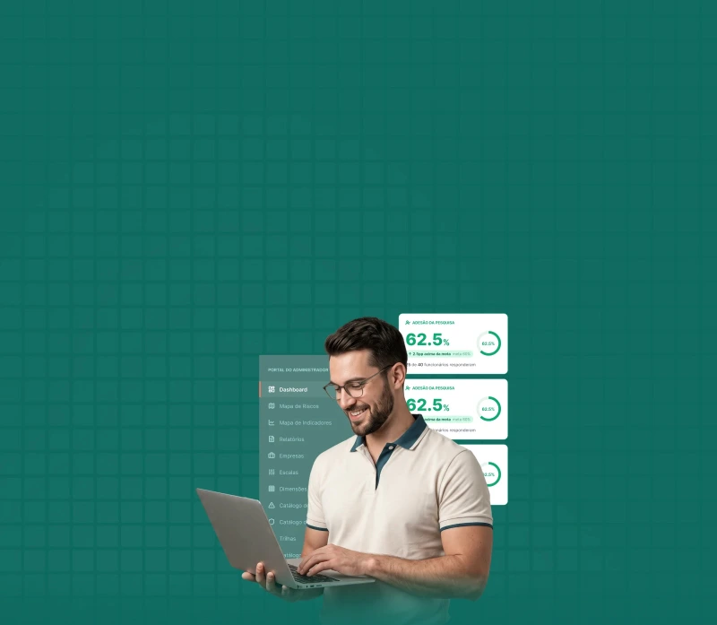

Cuidar das pessoas que fazem sua empresa funcionar também é proteger o negócio
A NR-1 trouxe os riscos psicossociais para dentro da gestão de riscos das empresas. Agora, entender fatores como sobrecarga, assédio, conflitos de liderança, falta de autonomia e pressão excessiva faz parte de uma gestão responsável.
A SIS Mental Health conduz sua empresa do diagnóstico à ação, combinando metodologia validada, tecnologia, escuta e análise técnica para transformar dados sobre o trabalho em decisões mais seguras para as pessoas e para o negócio.